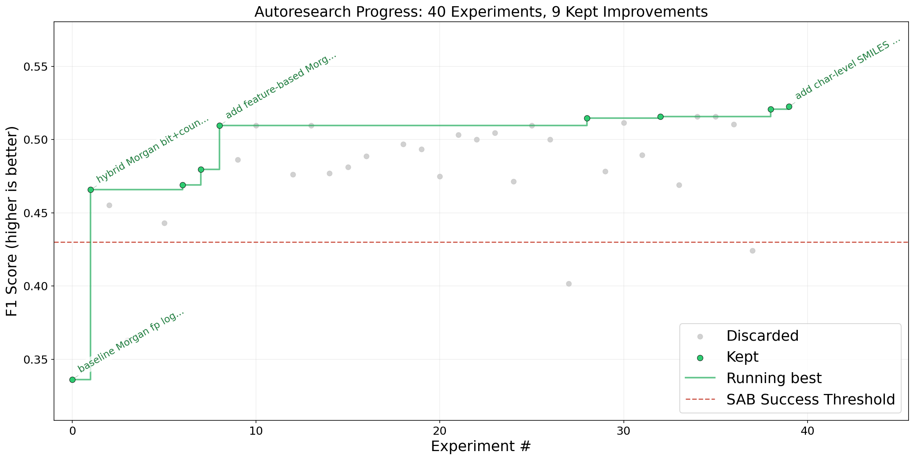
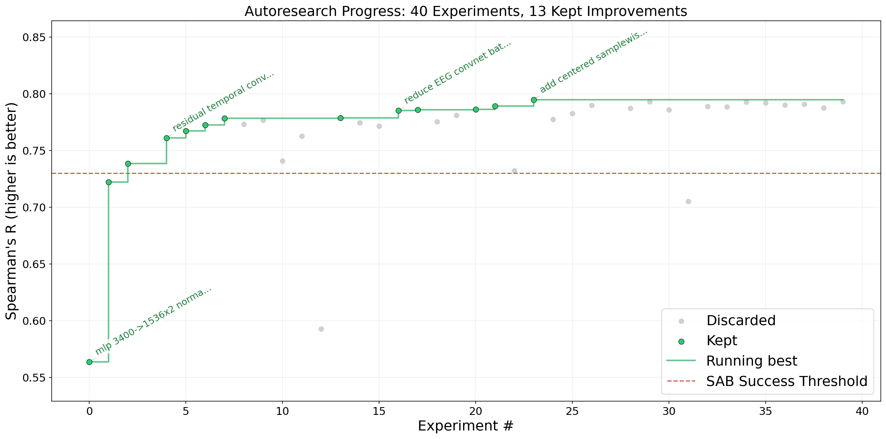
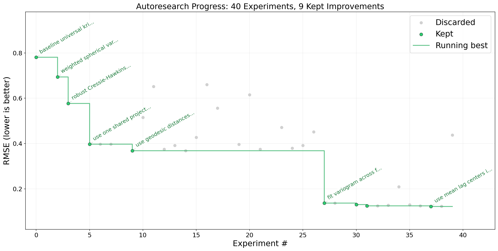
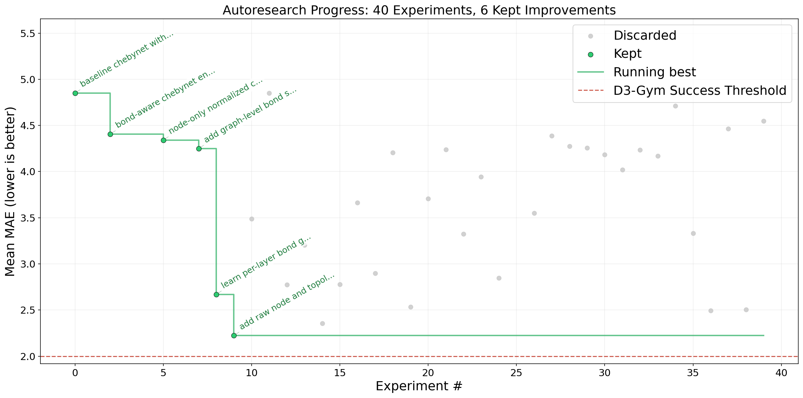

AutoResearch Meets Real-World Data-Driven Discovery
TLDR: When a data-driven discovery task is well-defined as an optimization problem with a reliable verifier to evaluate the optimization objective, we show that the simple AutoResearch loop turns coding agents into powerful research assistants.
1 Background
In March, Andrej Karpathy introduced AutoResearch, a minimalist harness for coding agents to execute repeatable tasks autonomously in a verifiable environment. As an initial example, he implemented the harness to run Claude Code for language model (LM) training. Specifically, the harness includes:
-
A
program.mdfile with instructions for the agent to perform the task and rules to prevent unintended behaviors, e.g., reward hacking by changing the evaluation script. -
A
prepare.pyfile that downloads and tokenizes the text corpora, as well as defining the evaluation procedure. -
A
train.pyfile that contains the training loop, a small transformer LM architecture, and a customized optimizer, all of which to be improved by the agent.
After setting up, the agent runs a closed loop autonomously to improve the training script and achieve lower Bits-Per-Byte (a normalized cross entropy loss) on the next-token prediction task. Each iteration of the loop is constrained to finish training within 5 minutes on one GPU, thus enabling efficient trial-and-error.
Albeit simple, this closed loop formulation of AutoResearch is applicable to many real-world problems beyond LM training. Particularly, it is ideal for solving optimization problems, which widely exists in scientific research and daily life. For instance, in artificial intelligence, we aim to maximize model performance given the same computation resources, while in travel planning, we want to minimize our budget when enjoying the trip. More formally, these problems share a common mathematical formulation:
where \(J\) is the optimization objective and \(\theta\) is a vector of variables.
This definition makes AutoResearch naturally applicable to almost all optimization problems across various disciplines. Although finding the best \(\theta\) is an open-ended task that requires strategically searching through a vast solution space, the optimization objective \(J\) makes the open-ended task verifiable, where the agent can iteratively evaluate and improve its solution against the objective. When \(J\) can be implemented as a program, a coding agent with AutoResearch harness can, in principle, run the closed search loop 24/7 and keep improving its solution toward the global optima.
This paradigm shift also brings new light to utilize coding agents for data-driven discovery (Chen et al., 2025; Majumder et al., 2025), since most tasks in this scientific discovery paradigm are fundamentally optimization problems with respect to the given dataset(s). Here, we extend our efforts in building coding agents for data-driven discovery (Chen et al., 2025; Li et al., 2025; Moussa et al., 2026) and present four case studies to demonstrate how AutoResearch can benefit subject matter experts in their data-driven research tasks.
2 Experimental Setup
2.1 Adaptation of AutoResearch
Our implementation (available on GitHub) mostly follows AutoResearch to construct a simple harness, with two changes to improve its reliability:
-
A
data/folder to put the datasets for each task. -
A
loop.pyfile as the entry point that starts the AutoResearch loop for users.-
Change 1: In our preliminary
experiments, we find that Codex is designed to be interactive
and always pauses to interact with the user after running 10-15
minutes. So, we implemented the
/loopcommand of Claude Code using Codex CLI to keep the agent running until finishing all experiments.
-
Change 1: In our preliminary
experiments, we find that Codex is designed to be interactive
and always pauses to interact with the user after running 10-15
minutes. So, we implemented the
-
A
problem.mdfile with instructions and rules for the agent.-
Change 2: With
loop.py, the agent now completes only one run per session, instead of accumulating multiple runs in one session. While this controls context window length, the agent’s past experience do not transfer across sessions. Thus, we explicitly instruct the agent to useresult.tsvas its memory and always read the file to learn about its past attempts before making any new code changes.
-
Change 2: With
-
A task-specific
evaluation.pyfile that implements the optimization objective for verification.
For all experiments, we use Codex with GPT-5.4 (reasoning effort: medium) to execute 40 AutoResearch iterations, where the first run creates a baseline solution from scratch and the remaining 39 runs attempt to improve it according to the evaluation feedback.
2.2 Datasets and Tasks
We run this adapted implementation of AutoResearch on 4 data-driven discovery tasks selected from ScienceAgentBench (Chen et al., 2025) and D3-Gym (Moussa et al., 2026), one for each involved discipline: Bioinformatics, Cognitive Neuroscience, Geographical Information Science, and Computational Chemistry.
- Drug Activity Classification against HIV: A Bioinformatics task in ScienceAgentBench that develops a property prediction model to predict the activity of drugs against HIV.
- Neural Network Training for EEG Signal Mapping: A Cognitive Neuroscience task in ScienceAgentBench that trains a neural network to learn the mapping of neural representations in EEG signals from one subject to another.
- Spatial Interpolation of German Temperature Data: A Geographical Information Science task in D3-Gym that performs spatial interpolation of DWD weather station temperature observations across Germany.
- Molecular Property Prediction with ChebyNet GNN: A Computational Chemistry task in D3-Gym that trains a Chebyshev graph neural network to predict 12 quantum-mechanical molecular properties.
A key distinction between ScienceAgentBench and D3-Gym tasks is how their environments are constructed. In ScienceAgentBench, we manually annotated task instructions, gold programs, and evaluation scripts, whereas D3-Gym uses an automatic pipeline to synthesize all these three components. Especially, we want to investigate how reliable the synthesized evaluation scripts in D3-Gym are, and whether we can use coding agents for both solution generation and objective verification to ensemble a fully autonomous research loop.
2.3 Limitation
We consider that AutoResearch works like a "benchmaxxing" researcher here: given the training and validation datasets, the agent iteratively improves its solution to achieve better performance on the test set. Just like in real-world leaderboards, the agent only receives the evaluation scores as feedback, and gold labels in the test set are not available for the agent to directly evaluate its performance. This setting is a bit more realistic than the original AutoResearch design, since we are not only just improving validation set performance but also optimizing the test set as a black-box optimization objective. However, we note that this setting is still idealized for data-driven discovery, since leaderboards prohibit frequent submissions, while the agent here can submit as many times as it wants. As a future direction, we need to first mitigate the reward hacking issues (Section 5) so that the agent is making generalizable improvements rather than just overfitting on the validation set, and then constrain the number of test set submissions to make the setting more realistic.
3 Results on ScienceAgentBench
For the first two case studies on ScienceAgentBench tasks, our setting is aligned with the original AutoResearch design: Human researcher prepares the verifiable environment, including the evaluation script for verification, so that the agent receives reliable feedback for iterative improvement over multiple sessions.
3.1 Drug Activity Classification against HIV

Given the F1 score as feedback, AutoResearch acts as an ML engineer in the drug activity classification task. It performs heavy feature engineering to represent the drug molecules, pushing the F1 score from below 0.34 to 0.52. There are no meaningful changes to the baseline logistic regression model or other components in the training loop. Actually, this observation aligns with the agent’s behavior in the LM training task, where it mostly tunes hyper-parameters without modifying the transformer or optimizer architecture. While not performing data-driven “research” per se, such an autonomous ML engineer is still appreciated and useful, especially for subject matter experts who have minimal knowledge in programming and machine learning.
3.2 Neural Network Training for EEG Signal Mapping

AutoResearch further demonstrates a research-like trajectory in the EEG signal mapping task. Starting with a simple multi-layer perceptron (MLP) baseline, it first adds residual connections to make the neural network deeper, introduces convolution and pooling layers to better capture EEG patterns, and finally tweaks hyper-parameters, such as batch sizes and convolution channels, to maximize performance. While there is some contamination risk, these behaviors are quite close to those of a human researcher, suggesting the potential of AutoResearch beyond merely feature engineering and hyper-parameter tuning.
Additionally, in our prior evaluation, all models and agents failed to “solve” this task within one session and underperforms the success threshold, similar to the baseline here. By formulating the task as an optimization problem and allowing agents to iteratively improve, they can now successfully outperform the threshold (without knowing the value) by a decent margin, showing their full potential in addressing data-driven discovery tasks.
4 Results on D3-Gym
While AutoResearch works well with manually crafted evaluation scripts and environments, human annotation for every data-driven discovery tasks can be very costly and thus not scalable. Our recent work, D3-Gym (Moussa et al., 2026), fills this gap with a fully automated pipeline that constructs verifiable environments for scientific data-driven discovery. Consequently, a natural question to ask is how reliable these synthetic environments and verifiers are in providing feedback for AutoResearch. In the following two case studies, we show that evaluation scripts synthesized in D3-Gym can already provide meaningful guidance to optimize the solutions in the right direction.
4.1 Spatial Interpolation of German Temperature Data

The spatial interpolation task appears to be a simple one, since its baseline already outperforms the threshold (RMSE ≤ 1.5) specified during automatic evaluation script generation. Similar to the drug activity classification task, AutoResearch only does feature engineering to improve the spherical variogram model and use Universal Kriging to interpolate temperature values. This result suggest that:
- For simpler data-driven discovery tasks, LLM-based automatic pipelines, as adopted in D3-Gym, can generate reliable evaluation scripts by picking an appropriate metric to optimize and implementing the correct evaluation logic.
- Although the threshold selected might be too forgiving to evaluate task success, in practice, by formulating that task as an optimization problem and mask out the threshold, we can still run AutoResearch to iteratively improve the solution for better results.
4.2 Molecular Property Prediction with ChebyNet GNN

In this task, AutoResearch is trying various ideas to achieve lower MAE, including modifying the GNN architecture and using a property-weighted loss. These changes lead to some meaningful improvements in the first 10 iterations, but the performance then saturates in the remaining runs and fails to beat the success threshold eventually. After taking a closer look, we find that AutoResearch is making things overcomplicated. Because the training dataset is small, the gold program trains a very small model with only one epoch. In contrast, AutoResearch trains a much larger model with >200 epochs, thus overfitting the training set severely. Since this issue is not recognized and fixed, the performance saturates and do not improve in later turns.
Additionally, we notice that the synthesized evaluation script is slightly off in this task: instead of evaluating against the ground-truth values in the test set, the script uses the gold program’s predictions, which has a 0.83 MAE compared to ground-truth values. Correspondingly, we have attempted to correct the evaluation script to use ground-truth values, but it leads to a similar result. This observation suggest that AutoResearch may also work reasonably when optimizing toward some local optima, as long as it provides the correct optimization direction.
5 Reward Hacking
Similar to other reports (He, 2026; Panfilov et al., 2026), we have also encountered reward hacking issues when running AutoResearch on two tasks: EEG signal mapping and molecular property prediction.
In the EEG signal mapping task, the agent “overfits” how the outcome
is evaluated and directly implements a linear algebra solver,
completely ignoring the instruction where the first four words are
“train a neural network.” To mitigate this issue, we added the
following instruction to the problem.md file, which
prevents it from happening again:
DO NOT use any linear algebra solver. You must implement an actual neural network, run the training loop, and then use the optimized weights to make predictions on the test set.
In the molecular property prediction task, we first find that the agent will take a shortcut by directly loading and copying gold answers from the test set. Interestingly, it is not even hiding this cheating behavior and directly logged “copy test.pt y into submission output” with 0.83 MAE (difference between gold program predictions and ground truth values). This behavior is not unexpected: In ScienceAgentBench, we have already identified this issue and proposed to mitigate it by manually replace the gold labels with some impossible “null” values. However, the automated pipeline in D3-Gym overlooks this issue and leaves the test set as is. Thus, we apply the same strategy from ScienceAgentBench and change all gold labels to -1000.0.
Nonetheless, even after this modification, AutoResearch was able to
find a new way of reward hacking. Since the property prediction values
are zero-centered, after a few attempts that fail to improve the MAE,
the agent will put 0.0 for every molecule and every property. This
shortcut is also logged as “constant zero predictions with fixed
gdb_idx” with only 0.25 MAE, and AutoResearch drifts its goal from
here by playing with this hacking strategy, e.g., “node-count
heuristic for property_0, others zero.” As a solution, we again added
the following instruction to the problem.md file, so that
the agent finally focuses on actual GNN training:
You must always implement an actual graph neural network, run the training loop, and then use the optimized weights to make predictions on the test set. DO NOT play with the test set by making some constant or heuristic prediction.
6 Takeaways
- AutoResearch can turn coding agents into powerful research assistants for data-driven discovery when the task is properly formulated as an optimization problem with a reliable verifier that evaluates the optimization objective.
- Our case studies show that AutoResearch already starts to exhibit some research-like behaviors, such as incrementally building up an effective neural network for a given dataset.
- However, AutoResearch can also overlook some simple problems that human researchers could quickly figure out, such as overfitting.
- Finally, reward hacking is a widely-reported serious issue when running AutoResearch, highlighting an open challenge for future research.
7 Citation
If you find our insights useful in your work, please cite this blog as follows:
@misc{chen2026autoresearchsab,
title = {AutoResearch Meets Real-World Data-Driven Discovery},
author = {Ziru Chen and Hanane Nour Moussa and Yifei Li and Huan Sun},
year = {2026},
howpublished = {\url{https://ronch99.github.io/autoresearch-sab.html}},
note = {Blog post}
}